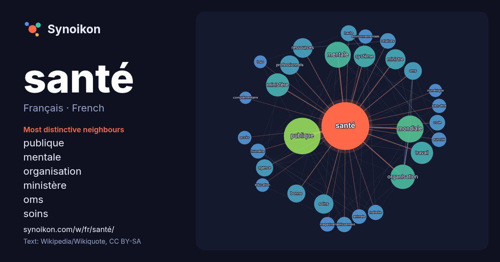

Français · French · popular word
santé
“health” · The words found around it in 1519 instances from French Wikipedia, Wikiquote.

Most distinctive neighbours
- publique 67×
- mentale 64×
- organisation 42×
- ministère 32×
- oms 32×
- soins 29×
- ressources 28×
- mondiale 27×
- agence 25×
- relatives 23×
- animale 21×
- professionnels 20×
- bien-être 20×
- bonne 20×
- environnementale 20×
- travail 19×
- humaine 18×
- ministre 17×
- établissement 16×
- logo 15×
× = how many times more often than in general French Wikipedia text.
Most frequent neighbours
- publique 133
- mondiale 72
- mentale 67
- organisation 59
- ministère 53
- travail 49
- service 47
- france 46
- système 46
- ministre 40
- ressources 38
- professionnels 37
- soins 37
- bonne 32
- politique 32
- oms 31
- agence 29
- droit 26
- haute 25
- code 24
In context
- Pour les articles homonymes, voir Santé (homonymie). Cet article concerne la santé de l'homme. Pour l'animal, voir Santé animale, Bien-être animal. Pour Wikipedia snippets · Santé
- La santé publique peut être définie comme « l'étude, d'une part, des déterminants physiques, psychosociaux et socioculturels de la santé de la population Wikipedia snippets · Santé publique
- La prison de la Santé, officiellement centre pénitentiaire de Paris-La Santé, simplement surnommée la Santé, est un établissement pénitentiaire français Wikipedia snippets · Prison de la Santé
- L'Organisation mondiale de la santé (OMS) est une agence spécialisée de l'Organisation des Nations unies (ONU) pour la santé publique créée en 1948. Elle Wikipedia snippets · Organisation mondiale de la santé
- professionnel de santé est une personne qui exerce ses compétences et son jugement, fournit un service lié au maintien, à l'amélioration de la santé des individus Wikipedia snippets · Métiers de la santé
- La santé mentale, la santé psychique, la santé psychologique, l'hygiène mentale ou le bien-être psychologique est le bien-être psychique, émotionnel et Wikipedia snippets · Santé mentale
- et Ministère de la Santé (France). Pour les autres articles nationaux ou selon les autres juridictions, voir Ministère de la Santé. Cet article donne Wikipedia snippets · Liste des ministres français chargés de la Santé
- Les soins de santé (en anglais : Health care) concernent la santé des humains et la santé animale. Ils s'appuient sur les sciences appliquées et les connaissances Wikipedia snippets · Soins de santé
More French words
- art
- automne
- carte
- chanson
- chat
- chemin
- cheval
- chien
- climat
- cloche
- cœur
- dieu
- désert
- eau
- famille
- forêt
- histoire
- hiver
- horloge
- jardin
- langue
- miel
- miroir
- monnaie
- montagne
- mort
- mère
- nature
- nourriture
- ombre
- pain
- pluie
- pont
- pouvoir
- printemps
- science
- sel
- silence
- temps
- tempête
- thé
- train
- travail
- trésor
- vie
- ville
- vérité
- étoile
- île
Precomputed on 2026-10-09 with default settings (±5 words, medium corpus). The interactive map can refresh it with live data.